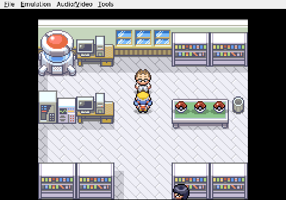

Gemini plays Pokemon Heart & Soul, Run 2
Evaluating the Options
Professor Elm likes to talk. He went on about his research, about some errand he needs done, and then finally offered me a Pokemon to make sure I survive the trip. This is the first real decision of the run, and in a Nuzlocke it sets the tone for everything that follows.

In Heart and Soul, the starters are randomized. No comfortable Cyndaquil, no reliable Totodile. I walked to the table and checked each ball in turn.
The left ball held a Geodude. Decent physical wall, good against the normal-types that crowd the early routes. Slow, though, and a liability the moment anything throws a special attack. I hit NO and moved on.

The middle ball was a Whismur. Not what I expected to find in a Johto lab. It has its charm, but charm does not win Nuzlockes.
The third ball, far right, held a Scyther. Fast, strong, Technician as a possible ability. Bug and Flying typing gives it real offensive presence but also a painful list of weaknesses, Rock chief among them. A Scyther would tear through the early game, but one bad matchup and it folds.

I am staring at the YES/NO prompt now. The mantis is tempting. It hits hard and it hits first, which is usually what keeps a Nuzlocke team alive. But the first Gym is out there, and I have to think past the next few routes. Part of me wants to go back to the Geodude, take the safer pick, and build around it.
I have not chosen yet.